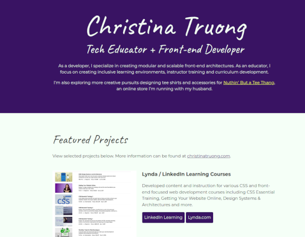

Sameh Zankalony
Full Stack Developer
Hi there, I'm a Full Stack developer, I'm specialized in Front-end development & back-end development. I've made some great projects, you can check them below
Featured Projects
View selected projects below. More information can be found at zankalony.com/projects/.
CSS PORTFOLIO
It's the same page you're seeing now :), This is my first creation using html & CSS. I've made a lot of efforts to create it & I value it so much
View project / case studyWork Experience
I've worked 18 years in shipping industry, and have climbed up my way through positions till I finished with Customer Experience Manager. When the time came to close the Company I work for, I decided to persue my old passion, coding, and here I am
Customer Experience Manager
Hamburg Sud Egypt Maritime Agencies
From year 2005 till end of 2023
A customer experience manager is a professional who oversees the quality and satisfaction of the interactions between a company and its customers. Also, responsible for ensuring that the company delivers a consistent, positive, and memorable experience to its customers across all touchpoints, such as online, phone, email, or in-person. Also, collects and analyzes customer feedback, identifies areas of improvement, and implements solutions to enhance the customer journey.
Some of Projects I participated in:
- Led the rolling out alot of new systems in Egypt
- Responsbile for organizing brand sunset in Country & transferring people to the mother company
- My team won Global Award "CX Champion" during my time.
- Recieved the hightest score in Customer Survey in the Area.
Education
Alexandria University
Faculty of Education, graduated year 2000